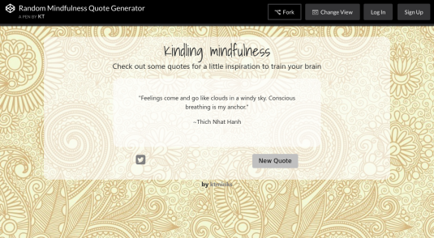
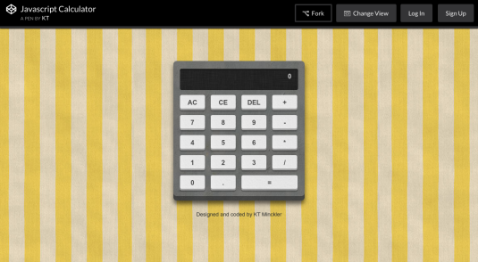

My Work

Illustration portfolio site, plus rock, paper, scissors!

Twisted Dragon Forge custom blacksmithing website

Local Weather, Wunderground API

Wikipedia Search App API

Mindfulness quote generator

Javascript calculator
About KT Minks:
Web developer & multi-disciplinary designer.
Altruist, adventurer, philomath. I love animals, good food, and better people. I have a simultaneous passion for both realism and cartoons, science and philosophy, solitude and compersion. I will forever be fascinated by that which we call the human condition, and the things we do to communicate to one another what this means to each of us.
I am currently pursuing my bachelor's degree and seeking a programming internship. I'm most experienced with HTML/CSS/Javascript development, illustration, and Photoshop image manipulation.